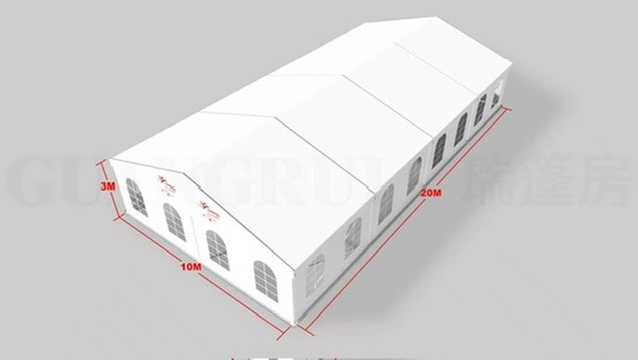

Location de tentes au Sénégal
Un espace couvert pour votre réception
Pour un mariage, un baptême, un anniversaire ou une cérémonie, une tente permet de prévoir un espace couvert pour les invités. Le catalogue FAMpro Évents présente une tente de 10 × 20 m.
Voir le catalogueFaire une demande
Préparer votre demande de location
Indiquez le lieu, la date, le nombre d’invités et l’usage prévu : accueil, repas ou cérémonie. Ces informations permettent à FAMpro de vous répondre sur le matériel adapté et sa disponibilité.
Confirmez avec FAMpro les dimensions utilisables du terrain, les accès et les modalités de livraison et d’installation avant de réserver.
Disponibilité, tarif et confirmation
Les équipements sont proposés pour des événements au Sénégal. Communiquez votre ville et le lieu exact afin de vérifier la possibilité de prise en charge. Les tarifs et modalités sont précisés par FAMpro selon votre besoin. La réservation est confirmée uniquement après notre réponse.